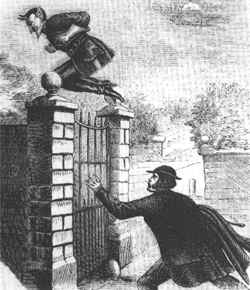

Un jour de la dernière semaine du mois : Des chasseurs voient comme 2 pleines lunes
dans la nuit pendant un long moment "Singular Phenomenon in the Heavens", The Hagerstown Mail de Southport (Hagers-Town, Maryland, USA), 3 mars 1837.
Mai
Dimanche 8 : L'attention de R. H. Bonnycastle alors qu'il regarde
les cieux est attirée par l'apparition soudaine à l'est d'une large colonne de lumière Bonnycastle, R. H.: American Journal of Science, 1837.
Août
29/30 : Au-dessus de Tîrgu-Neamt et Dorohoi : Dans le cours de cette nuit un
météore fut vu, ou un phénomène physique. C'était une sphère, allumée, longue d'environ 12 mains et large
(près de 3 m). Elle descendit dans le crépuscule et le champ entier brilla avec une lumière puissance et
lumineuseAlbina Românesca,
2 Septembre.
Septembre
Jack "talons à ressorts"

Tard
dans la nuit : A Londres (Angleterre), un homme d'affaire rentre du travail jusqu'à chez lui lorsqu'une
figure mystérieuse saute par-dessus les barrières d'un cimetière. Les barrières font plus de 3 m de haut (10
pieds) mais la créature saute par-dessus le mur et atterri directgement sur le chemin de l'homme. Il a des
oreilles pointues, de grands yeux luisants, et un grand nez pointu. C'est la première apparition de celui
que l'on va appeler "Jack talons-à-ressorts". Jack attaque un groupe de 3 femmes et
1 homme. Tous réussissent à s'enfuir sauf Polly Adams. Jack lui arrache le haut de son corsage, saisi ses
seins, et commencé à griffer son estomac, déchirant sa robe au niveau du ventre, comme avec des doigts
plaqués de fer. L'attaque laisse Adams inconsciente, découverte plus tad par un policier. Les victimes
décriront plus tard Jack comme pouvant cracher des flammes bleues : L'intrus était grand, mince et fort.
Il avait un nez proéminent, des doigts osseux, extrêmement puissants, qui ressemblaient à des griffes. Il
était incroyablement agile. Il portait une longue cape flottante, comme aiment en porter les gens qui vont à
l'opéra, les soldats et les comédiens ambulants. Sur la tête, il avait un casque haut, paraissant en métal.
Sous la cape, une combinaison moulante d'une matière brillante comme de la toile cirée ou un filet
métallique. Il avait une lampe attachée sur sa poitrine. Le plus bizarre de tout : les oreilles de la
créatures étaient courtes et pointues comme celles d'un animalVallée 1988.
Octobre
A Londres (Angleterre), Mary Stevens, une servante, retourne à la maison de ses employeurs sur Lavender Hill.
En traversant Cut Throat Lane dans Clapham Common, un personnage bondit d'une allée, l'ensserrant fermement dans
ses bras, embrasse son visage et commence à mettre ses mains dans son corsage. Stevens crie, faisant fuir le
personnage. Des hommes des environs sont alertés par les cris et arrivent rapidement sur les lieux. Ils
cherchent l'assaillant, sans succès.
Le jour suivant, "Jack talons à ressorts" frappe une nouvelle fois en un lieu proche de la résidence de Mary
Stevens. Il saute devant une voiture en route faisant perdre le contrôle de celle-ci par son conducteur et
provoquant un accident. Les témoins de la scène déclarent que Jack-talons-à-ressorts s'est échappé en sautant
sans effort par dessus un mur de 3 m (9 pieds). Peu après l'incident de la voiture, Jack accosta une femme près
de l'église de Clapham.
Peu après the carriage incident. Spring Heeled Jack accosted a women near Clapham Church. Le personnage à
laissé 2 empreintes de pas profondes de 7,5 cm (3 pouces), laissant imaginer une sorte de mécanisme de
"ressorts" dans les chaussures.